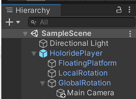
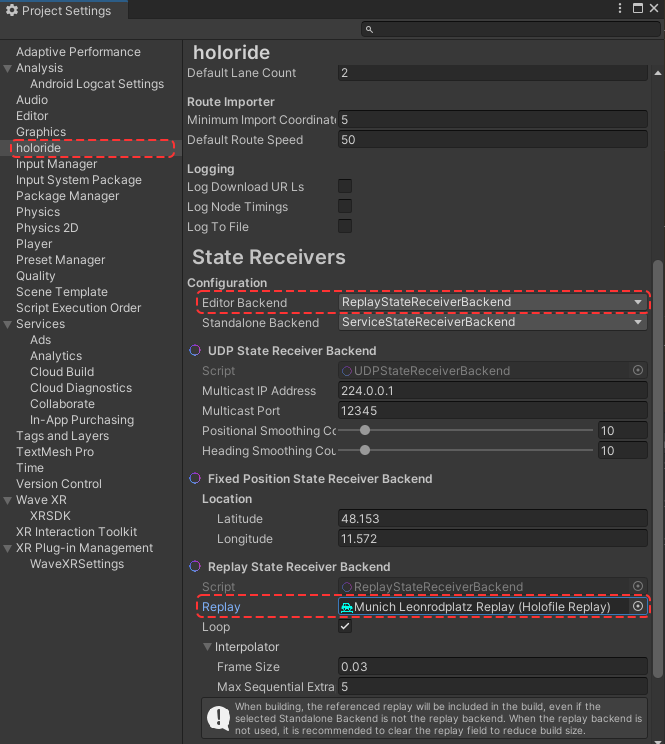
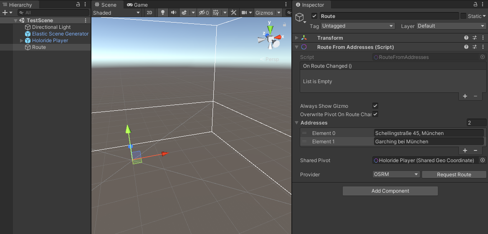
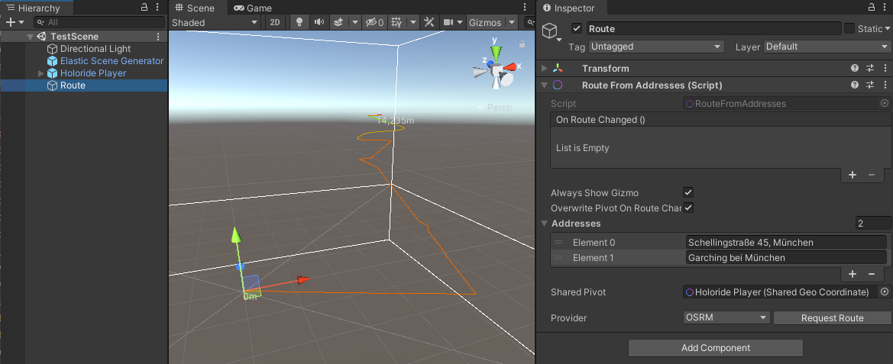
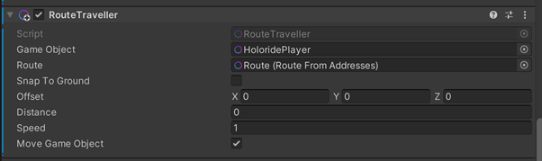
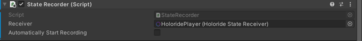
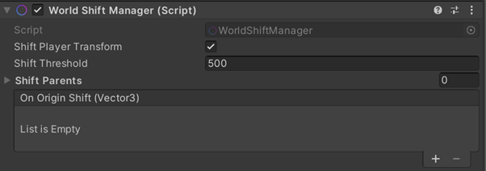

Vehicle Motion
When the user puts on their headset they enter a virtual reality, but the forces applied to them persist. It is therefore essential to provide adequate visual feedback by depicting what the user feels. Knowing that the virtual camera rig is controlled by both user head motion and car sensors, we’re able to create a virtual vehicle around the camera rig while also utilizing the cockpit for the application at hand. The interface can consist of 3D objects and 2D layers and can either be rigidly controlled by the car’s sensors or float around it in a playful manner.
HoloridePlayer Prefab
For easy integration, the Elastic SDK provides a HoloridePlayer Prefab for Unity3D that is controlled by the car’s sensors and moved through the elastic experience. As a child transform, the camera rig is carried on top, adding the current head rotation to the mix. Decorating objects or user interfaces can be attached to either of them. In addition, the sensor data can be accessed at any time. It can serve as a constantly updating parameter to emphasize the visual feedback to velocity, acceleration, and rotation provided by affecting particles, loose objects, or moving characters. It’s even possible to exaggerate the whole vehicle’s motion to imitate a jet that leans into the bend, or a sailboat that is dragged in the opposite direction—an effect that can be achieved using our Floating Platform component.
It can be instantiated from a prefab via the Create menu holoride > Player.

The prefab provides three child objects - FloatingPlatform, LocalRotation, and GlobalRotation - each with different rotation behavior.
FloatingPlatform
The FloatingPlatform uses movement and all rotation axes of the vehicle. Placing a cockpit model here and adjusting the associated curves in the editor will give the feeling of banking, when the real-world vehicle turns. With these curves, we can also emphasize acceleration or braking forces of the vehicle.
LocalRotation
In contrast to the FloatingPlatform, it only consists of movement and yaw rotation of the vehicle, but no roll and pitch rotation. Content moves as if attached to the vehicle. This means that the content uses the local coordinate system of the vehicle.
Note: For testing at your desk, place the main camera or camera rig here.
GlobalRotation
Content is aligned to the global coordinate system (i.e. relative to the world reference frame in Unity). This means that, when the vehicle turns the content does not turn with it. Place any persistent background objects here, such as mountains or hills.
Note: For testing in a moving vehicle, place the main camera or camera rig here.
Changing between “Desk” and “Vehicle” Configurations
When switching between testing at your desk and testing in the vehicle, the configuration of the HoloridePlayer object must be changed depending on the testing scenario. It must be made sure that the configuration of the parenting inside the HoloridePlayer object is set correctly.

The two child game objects within the HoloridePlayer that impact how the camera rotates in relation to world space and vehicle changes are LocalRotation and GlobalRotation.
Put your MainCamera into GlobalRotation before you hop into a car and try it out. Putting the MainCamera into LocalRotation is a convenience feature for testing at your desk.
Childing the MainCamera under the GlobalRotation object prevents “rotating away” as the vehicle travels in real-world space when the real-world vehicle turns.
Vehicle Data Sources / State Receiver
There are three ways to move the holoride Player object within the scene that differ depending on the source of the vehicle's motion path. Sources may be a live data stream of a car's sensors, a file that is a recording of such a stream, and a simulation based on a calculated route chosen by the developer. Depending on the testing stage of your development efforts, choosing the right testing setup is a matter of using the correct corresponding component.
Data sources are made available by State Receiver Backends through the singular StateReceiver. This auto-generated ScriptableObject asset contains all configuration for available sources. Here you can also configure which source to use in the editor and in builds (standalone). This can be useful when testing with replays, but using live data in builds.

You can configure the StateReceiver either by selecting the asset or in the holoride Project Settings category.
Replays
The ReplayStateReceiverBackend plays back recorded or implicit playback data.
Replays are typically based on recorded .holo and .holo2 files. These file types contain the recorded motion data of real-world travel in a car. You can download a pack of files recorded by holoride here. A default replay over the full length of the recording will be automatically created for each imported .holo and .holo2 file.
It is possible to create further replays representing different time slices of the recordings.
You can also record your own drives using the StateRecorder component (detailed description further below).
Alternatively, Route assets can be used as a source for synthetic rides, with a subset of possible sensory data. A common source for such routes are .kml files and the RouteFromAddresses component. This is similar to using the RouteTraveller component (see below).
As with .holo and .holo2 files, multiple replays over varying time slices can be created based on the same route.
To use the ReplayStateReceiverBackend:
- select it in the StateReceiver for the context to use it in (editor and/or standalone).
- add a replay, e.g. of a .holo recording (holofile) to the Replay field in the inspector.
Service
The ServiceStateReceiverBackend receives live data from the holoride DevKit or a supported vehicle.
To use the ServiceStateReceiverBackend:
- select it in the StateReceiver for the standalone context.
- unless requiring the extra control to connect via script at a custom point during initialization, keep the checkboxes for automatic initialization ticked.
RouteTraveller
The RouteTraveller is an alternative to using the Player (which uses the StateReceiver). It does not use or provide real motion data, but simply moves a GameObject along a predefined route with constant velocity. It also does not simulate any pitch and roll forces which can tilt/bank the virtual cockpit when accelerating, braking, or turning.
The big advantage is that you can simulate any kind of route on the planet.
To use the RouteTraveller setup, you need to do the following:
Create a route object in your hierarchy. (Right click in the Hierarchy and select Holoride->Route)
Add the addresses for desired use in the Addresses field of the RouteFromAddresses component within the inspector menu of the newly generated route object. Please note we are using the external Nominatim web service for this functionality. Alternatively, it is also possible to use latitude/longitude coordinates.

- Click on “Request Route” on the RouteFromAddresses component. This will generate a route spline in the scene.

- Now you can add the RouteTraveller Script wherever you want in the scene and link the generated route as well as the GameObject to move along the route.
Please make sure that MoveGameObject is set to true. This will enable RouteTraveller to move the GameObject. The speed at which the GameObject object travels through 3D space can be adjusted by increasing the value within the Speed field.

When using the RouteTraveller, be sure to reference its SharedGeoCoordinate in the ElasticSceneGenerator and avoid using a Player component (e.g. the HoloridePlayer prefab) at the same time.
StateRecorder (Recording data in the moving vehicle)
In order to record your data at runtime, add the StateRecorder component and link the StateReceiver being used.
The recording is automatically stopped when the component is disabled or the game stops.
The recording is stored in a file located in persistent data path /Holoride/Recordings and may be replayed using the FileStateReceiver.
More regarding the persistent data path in the Unity documentation: https://docs.unity3d.com/ScriptReference/Application-persistentDataPath.html

Recent Changes
Starting with version 0.16.0, the way State Receivers are presented has changed to more closely match their actual behavior and typically desired use. In earlier versions, State Receivers were presented as Unity components. This architecture was chosen to allow scene-specific event listeners via the inspector. However, State Receivers typically should not reset between scene changes. This required some potentially fragile workarounds internally. More importantly, it made setup more complicated for users than necessary. To ease configuration and reinforce the singular existence of State Receivers, they are now presented as a single ScriptableObject. Here all available State Receivers can be configured in one place. An additional quality of life improvement is the added option to select which receiver to use in the editor as opposed to in builds. This allows users to use some kind of replay in the editor and real data in builds, without needing to change their setup.
State Receiver implementations have also been renamed slightly:
- the FileStateReceiver is now replaced by the ReplayStateReceiverBackend. Its scope has been broadened to support any kind of Replay, not just .holo and .holo2 files.
- the HolorideStateReceiver is now replaced by the ServiceStateReceiverBackend to be more specific. It receives data from our service when running on Android, for example.
Recentering – Synchronizing the Headset “Forward” with Vehicle “Forward”
Implementation
To perform a vehicle recenter, the developer must call the Recenter() method on the holoride Player component. In code, using FindObjectOfType for demonstration purposes, this may look like this:
UnityEngine.Object.FindObjectOfType<Holoride.ElasticSDK.Player>().Recenter();
At this time there exist only vendor-specific methods for detecting recenter events. In the future, we plan to provide a generic drop-in solution for this task. However, for now it is the responsibility of the developer to call this method when the headset is recentered.
More information here.
Shifting Algorithm / Floating-Point Precision Challenge in the Game Engine
Floating-Point Challenge Explained
The game engine’s coordinate space was initially not designed to be used with vast distances traveled by a vehicle (i.e., many kilometers/miles, ten thousands of units in the game engine). The x/y/z coordinates are float32 values and therefore have limited precision for smaller distances when large values are present (i.e., all the precision is consumed by the digits in front of the floating point, so that digits after the decimal point are limited). This causes position jittering when objects / the player is far away from the origin of the coordinate system.
General Solutions
First of all, the Elastic SDK is calculating every coordinate in double precision (64 bit) internally to ensure no errors are induced. Furthermore, the Elastic SDK provides a shifting algorithm to shift everything in the scene once the player traveled a certain distance from the origin of the coordinate system.
WorldShiftManager
In order to keep objects close to Unity’s origin, all objects need to be shifted from time to time. The WorldShiftManager is the central place to manage all individual shifts. It will fire automatically as soon as the attached Player’s distance gets larger than the ShiftThreshold. Disabling this component pauses the process, which might be helpful in computationally heavy situations or if certain game objects, tiled textures, or shaders don’t shift as expected.
By default, the player itself is shifted. The ShiftParents list can contain any additional number of transforms that are parent to objects that should be shifted individually. Note that it is not sufficient to move only a parent transform if the individual child’s coordinates keep growing. Furthermore, an OnOriginShift callback is fired that passes the shift vector as an argument to be used by custom components or repeating textures.
